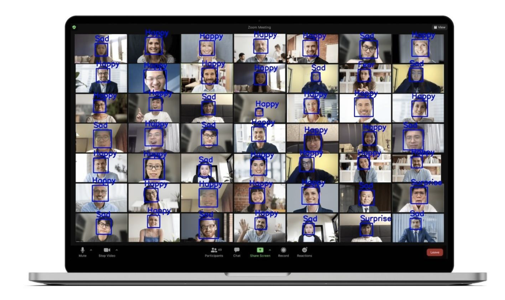
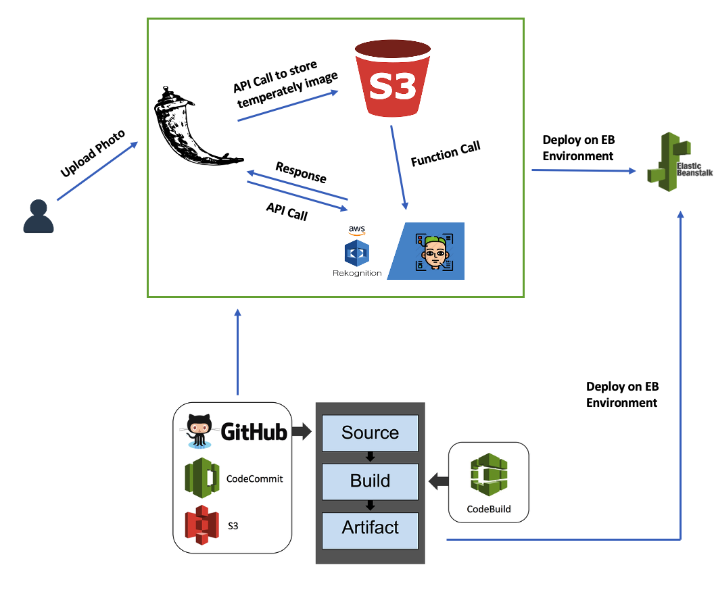
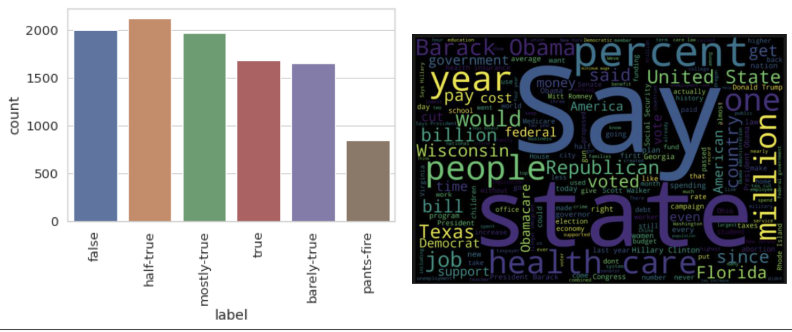
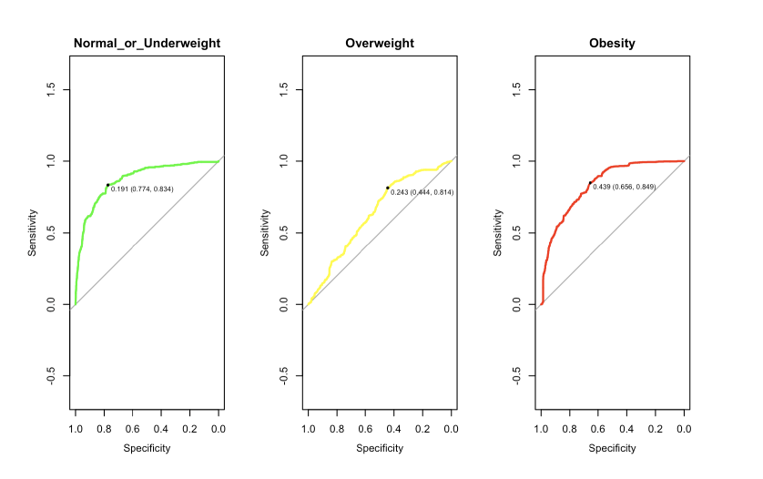

Facial Expression Recognition in Remote Learning

A key part of effective communication is the ability to get quality feedback, both verbal and non-verbal, that can be used to improve engagements future interactions [16]. However, capturing feedback and detecting the real time sentiment of audiences precisely, such as surprise or sadness, can be a challenging task when faces with the grid of faces we frequently see in video conferences.
The goal of this project is to present a final application that can help presenters to better evaluate the overall performance of the meeting attendees and improve overall communication efficiency. Specifically, this application uses a convolutional neural network to detect and classify video conference attendee facial expressions in real-time.
Cloud Architecture: Detect Celebrity From User-Upload Image

In this project, a flask web application is created and deployed using AWS Cloud9 IDE using Python, JavaScript, HTML, and CSS. Flask was used as a framework for the backend. Following instructions on the home page, user can upload photos to the web page, and the app will detect the celebrity contained in the photo.
The app was deployed through Elastic Beanstalk and is build and tested through AWS CodePipeline for continous delivery and continuous integration on the cloud.
Word2vec and GloVe Embeddings For Fake News Text Classification

In this project we explore global vectors for word representation (GloVe vectors), and discuss what needs they were created to solve, how they are constructed and how the method compares to word2vec.
As part of the comparison, we explore the differences in the types of similar words the two methods produce and briefly discuss the mathematical reasoning behind that. We also train two LSTM classification models to identify fake news with both a word2vec and a GloVe embedding layer – which perform identically.
Proportional Odds Model On Estimation Obesity Level Based On Eating Habits and
Physical Conditions

Previous research has shown that various social and behavioral factors
can explain this rapid growth. Among them, unhealthy eating habits and lifestyle are two crucial risk factors
for the development of obesity.
This analysis aims to conduct a statistical analysis based on previous study data on obesity estimation, using the proportional odds model to assess whether elements discussed in the study significantly predict obesity levels and whether the association between those behaviors or physical conditions obesity differs by
gender.